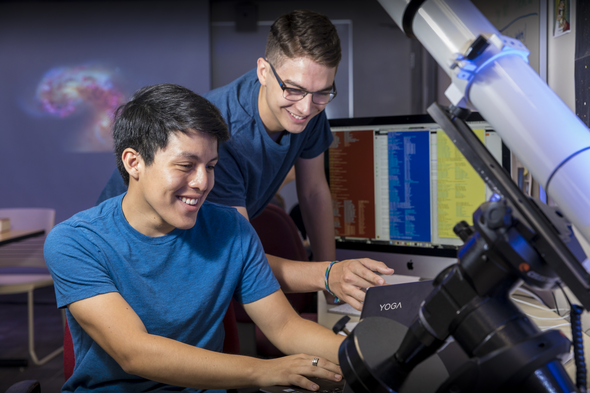

About Me

Education: BA candidate in Physics (Astronomy) and Mathematics at Macalester College
Research Interests: Neutrino Physics, High Energy Physics, General Relativity, Cosmology
Born and raised in Lima, Peru, I always had an interest in science and mathematics.
Research

Shower Energy Profile Identification of Electron Neutrino Charged Current Events
For this summer project, I developed an electron neutrino charged current interaction identification algorithm using C++ and ROOT within a LArSoft framework. Our goal was to correctly identify electron showers from liquid argon (LAr) time projection chamber (TPC) data using Monte Carlo simulations from the Deep Underground Neutrino Experiment (DUNE) Far Detector for future electron neutrino CC analysis. We designed and fabricated a gallery of shower profile templates for different particles and energies. Then, we analyzed the templates for likelihood calculation of particle hypothesis. Future steps for my project includes feeding the likelihoods into an Artifical Neural Network for electron shower identification. As part of this project, I displayed and communicated the preliminary results at the MicroBooNE Collaboration Meeting in July 2019, at the Fermilab community during final poster and oral presentations in August 2019, and at the SACNAS National Diversity in STEM Conference in October 2019.
Imaging and Analysis of Hickson Compact Groups
During this summer, I reduced, imaged and analyzed Very Large Array (VLA) data of selected groups of galaxies called Hickson Compact Groups. Our goal was to examine the neutral hydrogen (HI) deficiency in each galactic system for evolutionary study. For this, we investigated the morphology and dynamics of the HI gas components for each group by using the Common Astronomy Software Applications package (CASA) and the Karma visualization program kvis for data analysis. I delivered my results at the Macalester College Summer Research Poster Presentation in September 2018 and at the 233rd American Astronomical Society (AAS) meeting in January 2019.
Contact
Email: dlopezgu@macalester.edu
Address: 1600 Grand Avenue, Saint Paul, MN, 55015, USA